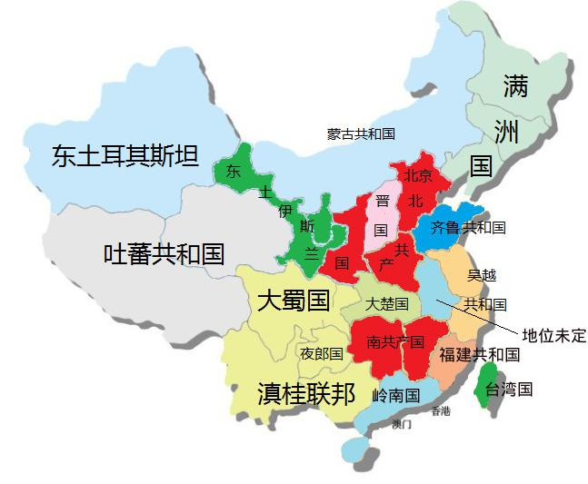

| 川普要尽力分裂中国，永远结束中国的专制传统。 |
| 希望美国政府能明白：分裂中国优于宪政改革 |
| 普京应该与日本联手推动满洲复国 |
| 日本，美国，俄罗斯，印度共同推动西藏独立 |
| 中华文明其实是贫穷落后的代名词 |
| 反共人士请先提高智商 |
| 中国民主革命的定位---新科技冲垮旧制度 |
共产党为什么这么黑
| 资助老兵维权 创造兵变条件 |
| 中共已是穷途末路，跳楼自杀不如拼死一博。 |
| 保财保命，主动联系CIA，不要愚蠢到索手就擒。 |
| 中共的核心利益：第一是维护共产党专制 |
| 我从来没有遇到过比中国人智商更低的民族 |
| 乐 朋：叶利钦说“共产主义” |
| 人与人之间最大的距离，是价值观。 |
蒙藏维满港大起义 | |
| 蒙藏维满港大起义 | |
| 蒙藏维满港大起义计划书 | |
| 作为领袖人物，你必须明白大起义为什么能成功。 | |
| 西藏青年会将加大展开复国运动 | |
| 南蒙古大呼拉尔（议会）成立大会在东京召开、韩连潮博士到会祝贺 | |
| 蒙藏维手拉手--学习波罗的海三国争独立 | |

反共革命方法论 | |
| 《革命策》 | 民主革命领袖教程 上 |
| 君子之怒 | 民主革命领袖教程 下 |
| 充当革命军之马前卒！ | 只要你敢暴打流氓法官 |
| 超级低俗屠夫（吴淦）宝典之一：杀猪宝典 | 三大“反对”势力如何运作？ |
| 打击中共基层干部是瓦解中共专制的特效办法 | 应该考虑筹组《暴打队》 |
709案是政治流氓习近平制造的虚假案件 | |
| 为 709 专案全体被捕人士辩护 | |
| 709颠覆案是政治流氓习近平炮制的虚假案件 | |
| 吴淦案会见简述 | |
| 谢阳妻子与美议员讨论709酷刑问题 | |
| 欧洲八律师团体致函中国关注709抓捕案 | |
| 拒绝官派律师的再次声明 | |
中共的末日已经来临 | |
| 中共政权崩溃的时间点 | |
| 致吴越地区公安，国宝的公开信。 | |
| 中共的苏维埃制度根本不配美国“尊重” | |
| 天下苦共久矣 | |
| 风声鹤唳 | |
| 草木皆兵 | |
{kind=link}
{kind=link}
{kind=link}
{kind=link}
{kind=link}
{kind=link}
{kind=link}
{kind=link}
{kind=link}
{kind=link}